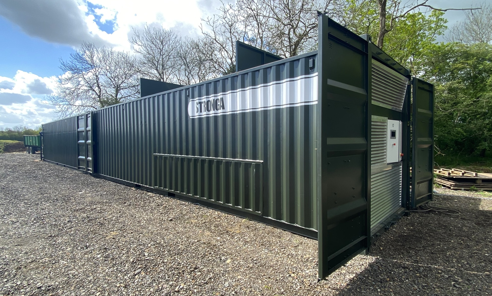
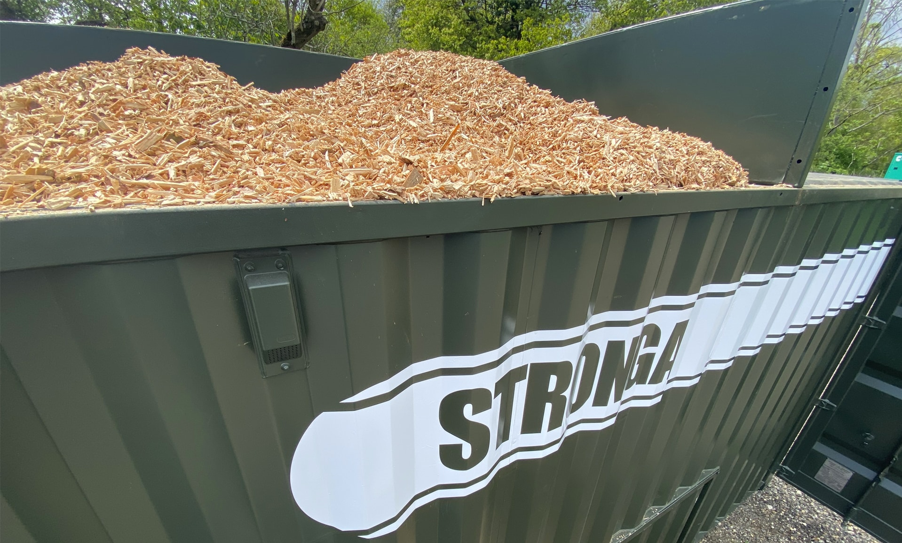
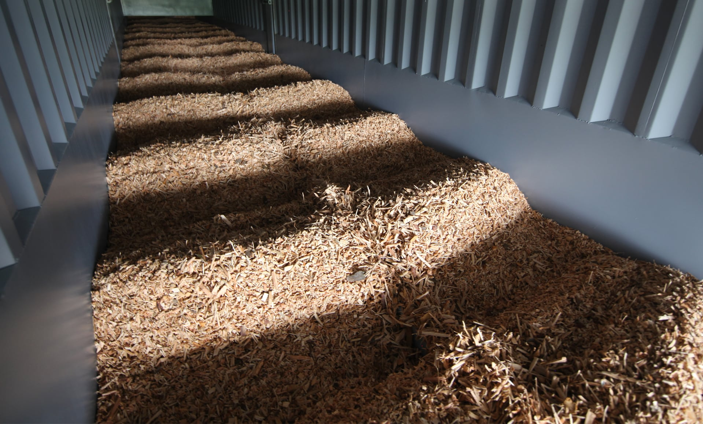
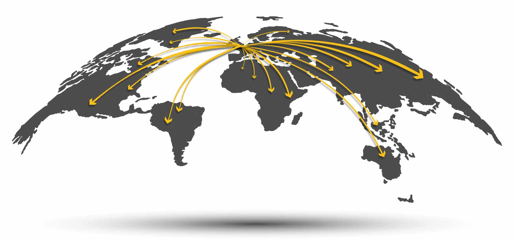

Tailor-made drying solutions
Optimised for energy-efficient drying
Integrated tailor-made drying solutions from Stronga are designed for energy-efficient drying, offering great value in an economic, easily transportable, modular configuration.
The International-edition FlowDrya range delivers optimal drying performance with long life reliability, repaying the initial investment back in no time at all. Stronga drying solutions are produced on a bespoke project-by-project basis, tailored to your requirements by considering the heat source, wet material properties, site location, output scale and more.

Frontrunner in output product quality
Optimise. Don’t compromise.
With intelligent consideration of your material, location and available heat source, Stronga are able to offer optimised solutions to maximise value from the flow drying process. The flexible FlowDrya system enables unlimited drying potential, leading to long term financial profitability and productivity. Each FlowDrya is tailor-made for the material to be dried, location, climate and so on. Operators should be aware that performance variations may occur if they choose to dry materials other than the one initially specified.
Watch the latest wet material drying videos on StrongaTV >
Designed simplicity
Robust & reliable. Continuous International-edition flow dryers from Stronga have no belts, chains, sprockets and few moving parts. With simplicity comes reliability and with reliability comes low service costs.
Low energy usage. FlowDrya International has an extremely low electrical energy requirement from soft-start continuous drying operation offering the lowest kWe cost per ton dried.
Low labour costs. The powerful combination of high capacity drying with semi-autonomous operation and modern controls minimises expensive labour costs.

Transportable intermodal system
Road, rail & sea cargo
Compared to the fully-fabricated FlowDrya Green Series, the International FD range can be easily picked up and transported through intermodal means via road, rail and sea cargo. The ability to easily relocate the flow dryer between different sites, different regions and different countries enables use across seasons, materials and crops.
Contact Stronga to discuss shipping to your site >
Super utilisation potential
The unique, new-era characteristics of FlowDrya allow its drying capability to range across a wide range of different wet materials and by-products. In combination with its low operating costs and high duty cycle, the flow dryer can be employed to its full capability throughout the year which, in-turn, creates super utilisation and added value potential.
Drying hemp, silage & more
Easily transportable
Between farms, countries & continents
Meeting individual needs
Climatic & locational
At Stronga, we’ve developed a drying system that has been proven to dry materials efficiently and thoroughly, reducing overhead costs and allowing businesses to process their product faster. In designing our flow drying systems, we carefully consider the unique needs of your local climate, wet material and individual situation.
Simplicity is paramount
The flow drying process, described
Simplicity is paramount in the International edition FlowDrya which positively moves and agitates wet materials from a separate top-feed hopper onto a lower level, full length, hydraulic-powered drying floor. Material flows at a variable, operator-controlled speed, drying materials evenly from wet input moisture content to the desired target dry output. The unique flow drying process enables materials to naturally mix, blend and agitate in the PulseWave™ action down the drying floor, over a flow of drying quality air (various fuel types & heat sources available).
Interact with the 3D model below to discover the details of FlowDrya International Series.
Airflow zoning
Optimising outcomes
For optimum outcomes, the Stronga design team intelligently “zone” the drying floor based on airflow pressure considerations and the unique properties of your wet material. Determining material type, heat source, scale and heat availability are some of the crucial parameters in optimising the design of the dryer. To deliver best outcomes, Stronga partner with clients to guide them through crucial stages of the project.

Integrated DryStation™ PLC
Success by controlling
FlowDrya International operations are controlled by the integrated, smart PLC which allows full control over drying operations while self-protection is managed automatically. Intelligent self-protection features include thermal protection for the oil and time-out protection
The illuminated DryStation™ touchscreen is intuitive and easy-to-use while logging of key performance parameters enables operator development and provides instant visual and set-point control of important drying parameters, including:
Strokes per hour ✔; Plenum temperature over time ✔; Material depth on the drying bed ✔; System status ✔; Manual mode operation ✔; Auto mode operation, including moisture metre sensor option (where fitted) ✔
DryStation™ HMI touchscreen
Modern secure remote access
Live viewing in high definition
The modern remote access enabled option allows connectivity and viewing by desktop or smart device while key drying parameters can be adjusted remotely, only by authorised personnel. Since the operation of the flow dryer does not require permanent operator presence, checking the parameters of the dryer remotely can be an extremely useful tool, especially in high-duty situations.
PulseWave™ agitation motion
Delivering evenness of dry output
The PulseWave™ motion on the drying bed thoroughly mixes materials to ensure that every part of the material interacts with the conductive heat from the drying bed and receives an even convective airflow, leading to uniformity of output dryness*. Gentle PulseWave™ agitation is a unique feature of FlowDrya International; no other dryer can offer this level of integrated material agitation.
* Material type, bulk density, location and ambient conditions all affect drying performance. Please contact Stronga to discuss your requirements in detail.
Your wishes, integrated
Energy-efficient drying systems from Stronga offer robustness, unique hydraulically-driven agitation and highly effective thermal conduction and convection drying. Discover the main benefits of the ‘International Series’:
Compact design, easily transportable between sites ✔; Semi-autonomous operation ✔; Flexibility to dry hemp, wood chip, forage & more ✔; Long life reliability of a well-proven, hydraulic moving floor drying system ✔; Scalable capacity in length & width, suited to your drying operation ✔; Compatible with various heat sources ✔; Excellent thermal & electrical efficiency ✔; Low operational & labour costs ✔
* Each International FlowDrya is tailor-made. No two projects are the same; we ask for key information about your specific project and material, including a wet material sample, location and preferred heat source. Our technical team can analyse the details before recommending the optimum design dryer.
Modular, scalable & best value
The modular, compact and aesthetic design of FlowDrya International is built on a bespoke basis to accommodate different layouts and capacity requirements. If additional drying bed capacity is required, multiple modules can be bolted-together in the build phase to scale-up the dryer.
The beauty of the International FD Series lies within its supremely easy transportation, simple positioning on-site and stress-free Stronga-led commissioning, prior to start-up.
Forward-looking energy-efficient drying
Across the world, too many outdated, in-efficient drying systems remain in use, resulting in high energy consumption and increased CO² emissions. FlowDrya International offers efficient moisture evaporation at a reasonable capital outlay, contrasting existing drying systems which have high power consumption demand while offering low evaporation efficiency.
Speak to Stronga today to be guided towards the goal of delivering a modern, energy-efficient flow drying system.
FlowDrya International is a modular, scalable, tailor-made continuous drying solution. Please enquire using the form below to discuss a suitably scaled solution for your project.